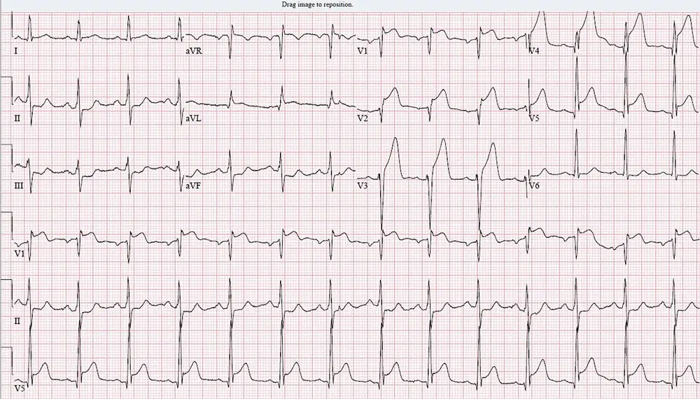

DX.1 — Syndrome coronarien aigu
DX.1 a le rang d’exclusion E1 de la liste canonique du LOT_001 (🚩 diagnostic grave à exclure en premier). La fréquence du SCA parmi les consultations pour transpiration reste non quantifiée en Suisse dans les sources consultées.
1. Définition
Le syndrome coronarien aigu (SCA) constitue une présentation clinique récente d’ischémie myocardique suspectée, avec ou sans modification de l’électrocardiogramme (ECG) et avec ou sans lésion myocardique aiguë. La stratégie initiale distingue un sus-décalage persistant du segment ST ou un équivalent d’occlusion, qui impose une filière de reperfusion, et une présentation sans sus-décalage persistant. Le SCA n’est pas synonyme d’infarctus : l’angor instable, la lésion non ischémique et les diagnostics extracardiaques doivent rester distingués. [S1] [S2]
2. Épidémiologie suisse puis européenne
L’Office fédéral de la statistique indique 19 634 personnes victimes d’un infarctus aigu du myocarde en 2023, dont 12 909 hommes et 6 725 femmesS3. Il rapporte 2 181 décès par cette causeS3S1. Ces nombres décrivent l’infarctus, pas l’ensemble des SCA, et ne fournissent pas la fréquence de ce diagnostic parmi les consultations pour sueurs. Les recommandations européennes décrivent une charge importante de cardiopathie ischémique, dont le SCA peut être la première manifestation.
Le dénominateur et la période changent l’interprétation. Les femmes et les personnes plus jeunes présentent plus souvent un infarctus sans douleur.3. Physiopathologie et cibles thérapeutiques
Une pathologie coronaire aiguë réduit l’apport sanguin à une partie du myocarde et peut produire une ischémie, une altération de contraction, une instabilité électrique puis une lésion cellulaire. L’athérothrombose reste le mécanisme le plus fréquent de l’infarctus primaire, mais une dissection, un spasme ou une embolie imposent d’autres distinctions. Les traitements visent soit la lumière et le débit coronaires, soit les plaquettes et la coagulation, soit la demande en oxygène et le risque de récidive. [S1] [S2]
La corrélation évite de confondre le marqueur et la cible. La sueur comme signal sympathique et l’effet des médicaments sur elle.4. Démarche diagnostique et diagnostics dangereux
La priorité est de reconnaître une occlusion coronaire présumée, une instabilité vitale ou une complication, puis d’exclure les autres urgences dont le traitement diffère. Le médecin doit intégrer la clinique, les constantes, l’ECG et la troponine plutôt que de choisir une hypothèse sur les sueurs seules. La présentation peut être douloureuse ou se manifester surtout par dyspnée, malaise, nausées ou arrêt cardiaque. [S1] [S2]
Le diagnostic différentiel modifie les gestes immédiats. Le SCA parmi les autres diagnostics différentiels du groupe G1.5. Anamnèse ciblée et drapeaux rouges
Le médecin précise le début et l’évolution des symptômes, leur caractère et leurs irradiations, les circonstances de survenue, les facteurs de risque et les antécédents coronaires. Il recherche d’emblée dyspnée, syncope, douleur réfractaire, traitement antithrombotique et risque hémorragique. Une suspicion forte avec instabilité déclenche les soins avant l’achèvement de l’entretien. [S1]
Chaque question prépare une décision. Les questions de symptômes ont une portée physiopathologique. Interroger la sueur : sept questions et la décision qu’elles préparent.6. Examen physique ciblé
L’examen commence par la vigilance, la ventilation, la perfusion et les constantes, puis recherche une complication et un diagnostic concurrent. Un examen normal ne permet pas d’exclure un SCA. L’auscultation et l’examen vasculaire orientent les examens urgents sans remplacer l’ECG. [S1]
Le normal précède les anomalies recherchées. Le pouls, la perfusion et la respiration sont recherchés par des gestes décrits. Examiner la sueur : peau, perfusion et signes associés.7. Approche syndromique et unités sémiologiques
Le médecin sépare le syndrome ischémique rapporté, les signes objectifs de défaillance et les manifestations autonomes. Il recherche une complication hémodynamique ou électrique en parallèle du territoire coronaire présumé. Aucun symptôme isolé ne remplace les critères électriques, biologiques et d’imagerie. [S1] [S2]
Les plaintes et les signes physiques ne sont pas interchangeables. Chaque signe retenu est défini avant son interprétation. Sueur, pâleur et tremblement fin : définitions opérationnelles.8. Diagnostic positif et critères actuels
Le diagnostic de travail de STEMI associe le contexte ischémique et des anomalies électriques compatibles ; la reperfusion ne doit pas attendre les biomarqueurs. La cinquième définition universelle de 2026 distingue ensuite une lésion aiguë, un infarctus primaire probable et une confirmation habituellement apportée par l’imagerieS1S2. Les seuils accélérés de triage de la troponine restent propres au réactif et distincts du 99e percentile diagnostique propre au sexe.
Les critères sont appliqués dans leur population.9. Examens complémentaires et interprétation
Il n’existe pas un examen unique qui remplace la combinaison clinique, électrique, biologique et anatomique pour toutes les présentations de SCA. L’ECG urgent et la troponine ultrasensible sériée précèdent les examens ciblés, tandis que l’échocardiographie et la coronarographie répondent à des questions différentes. Le choix d’imagerie tient compte du risque, de la grossesse, de la fonction rénale et des contre-indications du dispositif ou du contraste. [S1] [S2]
9.a La référence dépend de la question posée.
L’anatomie, la lésion et la fonction répondent à des questions différentes.9.b La première intention fournit une décision immédiate.
L’ECG, la troponine et la biologie initiale fournissent une décision immédiate.
[S1] [S2]Le tracé initial d’un STEMI antérieur montre le sus-décalage qui déclenche la reperfusion.
9.c Les alternatives respectent leur portée.
La grossesse, le rein, un dispositif implanté ou une réaction au contraste imposent une adaptation de l’examen.
[S1]9.d La seconde intention tranche une discordance.
La branche d’observation exige une nouvelle décision. Un exemple local de troponine utilise le réactif Roche sans changer les critères 2026. La préparation et les alternatives répondent à la question de l’examen. Le score HEART situe le risque d’un patient avec douleur thoracique.10. Arbre décisionnel actionnable
La décision suit d’abord la tolérance clinique et l’ECG, puis la troponine sériée et le risque. Chaque nouvelle douleur, instabilité ou modification électrique peut accélérer la stratégie. Une amélioration symptomatique isolée ne suffit pas à fermer le bilan. [S1]
| Signe ou résultat | Décision | Branche suivante à contrôler |
|---|---|---|
| La personne est instable ou présente une arythmie menaçante. | Il appelle l’équipe d’urgence, commence la stabilisation et organise une stratégie invasive immédiate si le SCA est retenu. | Il recherche en parallèle une complication mécanique et une autre urgence. |
| Le contexte et l’ECG indiquent un STEMI ou une occlusion équivalente. | Il organise une angioplastie primaire si le délai attendu depuis le diagnostic reste inférieur à 120 minutesS1. | Si le délai ne peut être tenu, les symptômes datent de 12 heures ou moins et les contre-indications sont absentes, il discute la fibrinolyse dans la filière spécialiséeS1. |
| La fibrinolyse a été réalisée. | Il transfère immédiatement vers un centre interventionnel. | Une résolution ST inférieure à 50 % à 60–90 minutes, une instabilité ou une ischémie persistante imposent une angioplastie de sauvetage ; sinon la coronarographie suit la branche 2–24 heuresS1. |
| Il n’existe pas de sus-décalage persistant mais un critère de très haut risque est présent. | Il organise une stratégie invasive immédiate. | Il ne reporte pas cette branche à la seule réception du deuxième dosage. |
| Le NSTEMI est confirmé ou le risque est élevé sans critère extrême. | Il retient une stratégie invasive hospitalière ; une réalisation dans les 24 heures doit être envisagée selon les critères ESCS1. | Il intègre les modifications ST/T, le sus-décalage transitoire et le score GRACE supérieur à 140S1. |
| La branche d’observation de troponine est obtenue. | Il complète à 3 heures et réévalue cliniquement et par imagerie selon le risqueS1. | Une discordance n’autorise pas une sortie automatique. |
| Les critères validés d’exclusion sont remplis et la suspicion clinique est faible. | Il définit l’évaluation ambulatoire ou alternative adaptée. | Il vérifie les consignes, les symptômes récidivants et la prise en charge du diagnostic retenu. |
11. Prise en charge, surveillance et pronostic
Le traitement vise une reperfusion rapide quand elle est indiquée, la prévention des complications et des récidives, et un retour fonctionnel sûr. Le médecin choisit les antithrombotiques selon le mécanisme, la stratégie et le risque hémorragique, puis adapte les traitements aux informations professionnelles suisses. Les écarts entre la stratégie ESC et une posologie AIPS restent identifiés au lieu d’être fusionnés. [S1]
11.A Les objectifs sont explicités.
La filière vise à réduire le temps d’ischémie et à stabiliser circulation, ventilation et rythme. L’oxygène est recommandé pour une saturation inférieure à 90 % ; son administration systématique au-dessus de 90 % n’apporte pas de bénéfice clinique démontréS1. Après l’événement, l’objectif LDL est inférieur à 1,4 mmol/L avec une diminution d’au moins 50 % par rapport à la valeur initiale selon l’ESC. S1
11.B Les moyens suivent une chronologie.
L’urgence suit les premières minutes puis la stratégie de reperfusion.| Médicament et cible | Dose et durée (AIPS) | Terrain et alertes |
|---|---|---|
| L’acide acétylsalicylique inhibe la thromboxane plaquettaire ; Aspirine Cardio® porte le n° 51795. | Dans l’infarctus aigu, la FI de mars 2026 prévoit 200–300 mg IV ou en forme orale à résorption rapide, puis 100 mg/j dès le deuxième jourS6. | Saignement, ulcère actif, insuffisance hépatique ou rénale sévère et méthotrexate ≥ 15 mg/semaine imposent la prudence ; la FI la contre-indique au troisième trimestreS6. |
| Le ticagrelor inhibe P2Y12 ; Brilique® porte le n° 61389. | La FI prévoit 180 mg de charge puis 90 mg deux fois/j avec AAS 75–150 mg/j, pendant au moins 12 moisS7. | Une hémorragie active, un antécédent d’hémorragie intracrânienne, une insuffisance hépatique sévère ou un inhibiteur puissant du CYP3A4 le contre-indiquent ; une dyspnée nouvelle s’exploreS7. |
| Le clopidogrel, prodrogue, inhibe P2Y12 de façon irréversible ; Plavix® porte le n° 54509. | Dans le SCA sans sus-décalage, la FI prévoit 300 mg de charge puis 75 mg/j au long cours avec AAS 75–325 mg/j ; après fibrinolyse, elle donne 75 mg/j avec ou sans chargeS10. | La variabilité du CYP2C19 et les interactions comptent ; l’insuffisance hépatique sévère et les lésions susceptibles de saigner contre-indiquent l’emploi, et la sécurité avant 18 ans n’est pas démontréeS10. |
| Le prasugrel inhibe P2Y12 par son métabolite actif ; Efient® porte le n° 59136. | La FI prévoit 60 mg de charge avant l’angioplastie puis 10 mg/j avec AAS, pendant 15 mois ; sous 60 kg ou à 75 ans et plus, l’entretien passe à 5 mg/jS11. | Un antécédent d’AVC ou d’AIT, un saignement actif et un Child-Pugh C le contre-indiquent ; l’arrêt préopératoire dure au moins 7 joursS11. |
| L’énoxaparine est une héparine de bas poids moléculaire ; Clexane® porte le n° 49456. | Dans l’angor instable ou l’infarctus sans onde Q, la FI prévoit 1 mg/kg SC toutes les 12 heures avec AAS, habituellement 2–8 jours ; le STEMI suit sa propre fenêtreS8. | Une thrombopénie induite par l’héparine (TIH) récente la contre-indique, et la voie IM est interditeS8. |
| L’héparine non fractionnée active l’antithrombine ; Liquémine® porte le n° 15159. | La FI prévoit un bolus de 5000–10 000 UI puis 20 000–30 000 UI/j, avec un TTPA cible de 1,5–2,5 fois la norme contrôlé à 1–2 h, 6 h, 12 h et 24 hS9. | Une TIH, un risque hémorragique ou une atteinte rénale ou hépatique sévère la contre-indique ; l’alcool benzylique l’exclut chez le nouveau-néS9. |
| Le fondaparinux inhibe le facteur Xa par l’antithrombine ; Arixtra® porte le n° 55937. | Dans l’angor instable ou le NSTEMI, la FI prévoit 2,5 mg SC une fois/j, sans dépasser 8 jours ; dans le STEMI, la première dose de 2,5 mg est IVS15. | Une clairance de la créatinine < 20 mL/min, un saignement important ou une endocardite bactérienne aiguë le contre-indiquent ; les règles d’angioplastie figurent dans leur fenêtreS15. |
| La nitroglycérine réduit la précharge ; Nitrolingual® porte le n° 40558. | La FI prévoit 1–2 pulvérisations sublinguales de 0,4 mg, à 30 secondes d’intervalle, sans inhalationS12. | Une systolique < 90 mmHg, un choc, une cardiomyopathie obstructive ou un inhibiteur de phosphodiestérase la contre-indiquent ; l’ESC ajoute l’infarctus ventriculaire droitS12S1. |
| L’atorvastatine inhibe l’HMG-CoA-réductase ; Sortis® porte le n° 54085. | La FI prévoit 10 mg/j au départ, 80 mg/j au maximum, avec des paliers d’au moins 4 semaines ; l’ESC vise la plus forte dose toléréeS13S1. | Une hépatopathie active, des transaminases > 3 fois la norme, une myopathie, la grossesse et l’allaitement la contre-indiquentS13. |
11.C La surveillance et la sortie reposent sur des critères.
| Situation surveillée | Moment et raison | Action en cas d’écart |
|---|---|---|
| Il suit l’ischémie et le rythme dès la présentation. | Le monitorage détecte une arythmie potentiellement mortelle ; le tracé est répété s’il y a des symptômes récidivants. | Une instabilité ou des modifications récidivantes fait réévaluer immédiatement la reperfusion. |
| Il recherche une hémorragie sous antithrombotiques. | La clinique, l’hémogramme, les plaquettes et la fonction rénale guident la sécurité selon le produit. | Un saignement, une diminution plaquettaire préoccupante ou une nouvelle atteinte rénale impose une réévaluation urgente de la prescription. |
| Il suit une perfusion Liquémine. | La FI prévoit les contrôles TTPA à 1–2 h,6 h,12 h et 24 h et une cible 1,5–2,5 fois la normeS9. | Une valeur hors cible ou un saignement impose un ajustement plutôt qu’une dose fixe poursuivie aveuglément. |
| Il surveille le foie sous Sortis. | Les transaminases sont contrôlées avant traitement puis régulièrement et lors de symptômes. | Une élévation persistante > 3 fois la norme conduit à réduire ou arrêter selon la FIS13. |
| Il réévalue le profil lipidique. | Le contrôle survient 4–6 semaines après une adaptation thérapeutique selon l’ESCS2S1. | Un objectif non atteint conduit à vérifier observance, tolérance et intensification adaptée. |
11.D Le pronostic et la récupération restent documentés.
La récupération fonctionnelle ne signifie pas la disparition du risque. L’éplérénone complète la stratégie après stabilisation dans un cadre précis. Les complications ont une séquence de reconnaissance et de traitement. Grossesse et allaitement gardent le libellé de chaque spécialité.12. Prévention primaire, secondaire et tertiaire
La prévention traite les facteurs de risque avant un premier événement, puis réduit la récidive et les conséquences fonctionnelles après SCA. La réadaptation cardiaque associe l’effort adapté, l’éducation, les facteurs de risque et les dimensions psychosociales. Le patient connaît les alertes et le traitement dont l’arrêt prématuré peut être dangereux. [S1]
| Niveau | Mesure | Suivi |
|---|---|---|
| Prévention primaire (avant l’événement) | Le médecin recherche tabac, hypertension, dyslipidémie, diabète et sédentarité et organise une prise en charge adaptée. Il ne prescrit pas une double antiagrégation à toute personne à risque sans indication. | Contrôle des facteurs de risque selon le niveau de risque et réévaluation périodique. |
| Prévention secondaire (après un SCA) | Sevrage tabagique, alimentation adaptée, activité physique, traitement hypolipémiant et stratégie antithrombotique prévue. Objectif de LDL inférieur à 1,4 mmol/L avec une baisse d’au moins 50 % par rapport à la valeur initiale selon l’ESCS1. | Contrôle du LDL 4 à 6 semaines après une adaptation thérapeutique ; recherche des obstacles à l’observanceS1. |
| Prévention tertiaire (limiter handicap et complications) | Réadaptation, soutien psychologique, retour aux activités selon la fonction, évaluation de la fraction d’éjection. | Réévaluation des symptômes, de la fraction d’éjection, de la participation et des besoins professionnels. |
13. Points clés verbaux
- Devant des sueurs froides avec douleur thoracique, dyspnée, malaise ou syncope, le médecin obtient un ECG à 12 dérivations dans les 10 minutes du premier contact et mesure la glycémie capillaireS1.
- Il ne retarde pas la reperfusion d’une occlusion présumée pour attendre la troponine ; il active la filière sur la clinique et l’ECG. [S1]
- Il distingue lésion myocardique aiguë, infarctus primaire et autres causes d’élévation de la troponine ; une troponine élevée n’est pas un infarctus en soi. [S2]
- Il sait que l’infarctus se présente souvent sans douleur typique chez les femmes, surtout jeunes (42,0 % contre 30,7 % dans un registre américain), les personnes âgées et les diabétiquesS54.
- Il adapte les antithrombotiques à la stratégie, au poids, à l’âge et à la fonction rénale plutôt que d’additionner les protocoles. Chaque dose vient de l’IP de la spécialité. [S6] [S7] [S8] [S11] [S15]
- Il n’administre ni fibrinolytique, ni fondaparinux, ni héparine avant d’avoir écarté l’endocardite (contre-indication des IP de Metalyse, Arixtra, Clexane et Liquémine). [S14] [S15] [S8] [S9]
- Il garde en tête que les sueurs persistent sous bêtabloquant en cas d’hypoglycémie et que les anticholinergiques suppriment la sueur sans traiter sa cause. [S20] [S59]
- Il organise une sortie comprise (consignes écrites, 144, réadaptation, LDL à 4–6 semaines) et un suiviS1.
14. Pièges et questions de l’examen fédéral
| Question | Réponse justifiée | Piège évité |
|---|---|---|
| Une troponine élevée prouve-t-elle une thrombose coronaire ? | Elle prouve une lésion selon les critères du dosage ; l’ischémie et la cause restent à établir. | Le candidat ne confond pas lésion et mécanisme. |
| Faut-il attendre la troponine pour un STEMI évident ? | La filière de reperfusion se fonde sur le contexte et l’ECG. | Il ne retarde pas une ouverture d’artère indiquée. |
| Un soulagement sous nitrate confirme-t-il le SCA ? | La réponse thérapeutique est non spécifique. | Il ne remplace pas l’évaluation par un test au médicament. |
| Un patient de 78 ans reçoit-il le bolus initial Clexane du STEMI standard S1S2? | La FI omet le bolus IV initial à 75 ans ou plus et modifie la dose SCS1S2. | Il ne transforme pas l’âge en simple détail administratif. |
| Le prasugrel est-il possible après un AIT ? | La FI Efient le contre-indique. | Il ne choisit pas un inhibiteur P2Y12 sans vérifier les antécédents. |
| La sortie à 72 heures est-elle automatique après une angioplastie réussie S1S2? | Elle ne concerne que des patients sélectionnés avec suivi et réadaptation appropriés. | Il ne confond pas un profil de faible risque et un critère universel. |
| Les durées 12 mois ESC et 15 mois Efient sont-elles une erreur à effacer S1S2? | Elles décrivent des sources différentes ; la prescription doit expliciter la stratégie retenue. | Il ne fusionne pas les libellés pour masquer une divergence. |
| Une personne consulte pour des sueurs froides sans douleur : l’ECG est-il facultatif ? | Non : les équivalents angineux sont fréquents chez la femme, la personne âgée et la personne diabétique ; l’ECG et la glycémie s’obtiennent ensemble. | Il ne réserve pas l’ECG aux douleurs rétrosternales typiques. |
| Une glycémie basse corrigée exclut-elle le SCA ? | Non : l’hypoglycémie peut coexister avec une ischémie ; l’ECG est obtenu si une douleur, une dyspnée ou une instabilité persiste. | Il ne conclut pas sur le seul retour à la conscience. |
| Un patient sous bêtabloquant et insuline transpire : la sueur est-elle forcément cardiaque ? | Non : l’IP de Beloc ZOK précise que les sueurs d’hypoglycémie ne sont parfois pas notablement inhibées et que la transpiration peut être renforcée ; la glycémie capillaire s’obtient d’abord. | Il n’attribue pas la sueur à l’ischémie sans mesurer la glycémie. |
| Fièvre, sueurs, souffle nouveau et douleur thoracique : fibrinolyse d’emblée ? | Non : l’endocardite bactérienne contre-indique Metalyse, Arixtra, Clexane (aiguë) et Liquémine (subaiguë). | Il ne fibrinolyse pas avant d’avoir écarté l’endocardite. |
| Le score HEART faible (0–3) autorise-t-il la sortie sans autre examen S1S2? | Il indiquait 1,7 % d’événements cardiaques majeurs à 6 semaines dans la cohorte de validation ; la décision suit le protocole local de troponine et la cliniqueS1S2. | Il ne substitue pas un score à l’algorithme validé et à l’ECG répété. |
Les sources permettent la vérification.
Les références sont numérotées comme dans la Phase B du 23.10.2026 ; les numéros S54 à S59 sont ajoutés le 26.10.2026. Une référence signifie une lecture ciblée (rubriques, résumé ou pages citées), pas une lecture exhaustive du document.
- [S1] European Society of Cardiology — Guidelines for the management of acute coronary syndromes. Date : 2023 ; catalogue officiel relu le 23.10.2026 ; consulté le 23 octobre 2026.
- [S2] ESC/ACC/AHA/WHF — Fifth Universal Definition of Myocardial Infarction. Date : 2026 ; §§6.1,7.2.1,14.1.5 ; consulté le 23 octobre 2026.
- [S3] Office fédéral de la statistique — Santé, statistique de poche 2025. Date : 2025 ; données 2023 ; pp 8–9 ; consulté le 23 octobre 2026.
- [S4] Swissmedic — listes officielles des médicaments et emballages autorisés. Date : état au 30.09.2026 ; consulté le 23 octobre 2026.
- [S5] Inselspital, Zentrum für Labormedizin — CobasPRO Referenzwerte. Date : 25.06.2026, version 21.0 ; consulté le 23 octobre 2026.
- [S6] Swissmedic/Refdata — information professionnelle AIPS Aspirine Cardio ; autorisation 51795. Date : mars 2026 ; consulté le 23 octobre 2026.
- [S7] Swissmedic/Refdata — information professionnelle AIPS Brilique ; autorisation 61389. Date : novembre 2025 ; consulté le 23 octobre 2026.
- [S8] Swissmedic/Refdata — information professionnelle AIPS Clexane ; autorisation 49456. Date : février 2026 ; consulté le 23 octobre 2026.
- [S9] Swissmedic/Refdata — information professionnelle AIPS Liquémine 25 000 UI/5 mL ; autorisation 15159. Date : avril 2023 ; consulté le 23 octobre 2026.
- [S10] Swissmedic/Refdata — information professionnelle AIPS Plavix ; autorisation 54509. Date : septembre 2022 ; consulté le 23 octobre 2026.
- [S11] Swissmedic/Refdata — information professionnelle AIPS Efient ; autorisation 59136. Date : avril 2025 ; consulté le 23 octobre 2026.
- [S12] Swissmedic/Refdata — information professionnelle AIPS Nitrolingual ; autorisation 40558. Date : novembre 2021 ; consulté le 23 octobre 2026.
- [S13] Swissmedic/Refdata — information professionnelle AIPS Sortis ; autorisation 54085. Date : avril 2025 ; consulté le 23 octobre 2026.
- [S14] Swissmedic/Refdata — information professionnelle AIPS Metalyse 10 000 U ; autorisation 55418. Date : octobre 2025 ; consulté le 23 octobre 2026.
- [S15] Swissmedic/Refdata — information professionnelle AIPS Arixtra ; autorisation 55937. Date : janvier 2026 ; consulté le 23 octobre 2026.
- [S16] Fedlex — loi fédérale sur l’assurance-maladie. Date : état au 1er juillet 2026 ; art. 25 al. 1 et 32 al. 1–4 ; consulté le 23 octobre 2026.
- [S17] Fedlex — loi fédérale sur l’assurance-invalidité. Date : état au 1er janvier 2026 ; art. 7 al. 1–2, 8 al. 1, 28 al. 1 et 1bis ; consulté le 23 octobre 2026.
- [S18] Collège national des enseignants de cardiologie — sémiologie cardiovasculaire. Source sémiologique déjà utilisée pour G1 ; les traitements ne sont pas importés ; consulté le 23 octobre 2026.
- [S19] Swissmedic/Refdata — AIPS Triatec, ramipril, autorisation 53875. Date : août 2026 ; consulté le 23 octobre 2026.
- [S20] Swissmedic/Refdata — AIPS Beloc ZOK, métoprolol, autorisation 52110. Date : octobre 2020 ; texte courant relu ; consulté le 23 octobre 2026.
- [S21] Swissmedic/Refdata — AIPS Inspra, éplérénone, autorisation 57147. Date : mars 2024 ; consulté le 23 octobre 2026.
- [S22] Inselspital — Coronarographie et stents. Page institutionnelle actuelle ; date éditoriale non affichée ; consulté le 23 octobre 2026.
- [S23] CHUV — Coronarographie / angioplastie. Date : 11 juillet 2024 ; consulté le 23 octobre 2026.
- [S24] CHUV — Déroulement d’une IRM cardiaque. Date : 31 janvier 2023 ; consulté le 23 octobre 2026.
- [S25] Inselspital — Imagerie cardiaque. Page actuelle ; date éditoriale non affichée ; consulté le 23 octobre 2026.
- [S26] European Society of Urogenital Radiology — Contrast Media Safety Committee Guidelines. Date : novembre 2025 ; publié décembre 2025 ; pp 11–19,26–27,31 ; consulté le 23 octobre 2026.
- [S27] Resuscitation Council UK — The ABCDE Approach. Date : publié octobre 2015, relu mai 2021, actualisé juillet 2024 ; gestes et signes seulement, pas traitements du SCA ; consulté le 23 octobre 2026.
- [S28] CNEC — Savoir examiner, examen vasculaire. Date : sémiologie 2009 ; aucun seuil thérapeutique ancien importé ; consulté le 23 octobre 2026.
- [S29] ESC — Guidelines for the diagnosis and management of syncope. Date : 2018 ; §3.1, définition physiopathologique uniquement ; consulté le 23 octobre 2026.
- [S30] Swiss Resuscitation Council — Algorithme BLS-AED-SRC. Date : 2025, version 1.0 du 12 novembre 2025 ; algorithme suisse actuel ; consulté le 23 octobre 2026.
- [S31] CNEC — Savoir interroger, douleurs et signes fonctionnels cardiaques. Date : 2009 ; descriptions sémiologiques uniquement ; anciens traitements et numéro français non importés ; consulté le 23 octobre 2026.
- [S54] Canto JG et coll. — Association of age and sex with myocardial infarction symptom presentation and in-hospital mortality. JAMA 2012;307(8):813–822. Consultation : résumé lu le 26 octobre 2026 ; registre américain NRMI 1994–2006 ; texte intégral non ouvert.
- [S55] Panju AA et coll. — Is this patient having a myocardial infarction ? (The rational clinical examination). JAMA 1998;280(14):1256–1263. Consultation : résumé lu le 26 octobre 2026 ; texte intégral non ouvert.
- [S56] Swap CJ, Nagurney JT — Value and limitations of chest pain history in the evaluation of patients with suspected acute coronary syndromes. JAMA 2005;294(20):2623–2629. Consultation : résumé lu le 26 octobre 2026 ; erratum JAMA 2006 ; texte intégral non ouvert.
- [S57] Backus BE et coll. — A prospective validation of the HEART score for chest pain patients at the emergency department. Int J Cardiol 2013;168(3):2153–2158. Consultation : résumé lu le 26 octobre 2026 ; texte intégral non ouvert.
- [S58] Swissmedic/Refdata — information professionnelle AIPS Axhidrox crème ; autorisation 69243. Consultation : mise à jour de l’information : février 2024 ; texte lu le 26 octobre 2026.
- [S59] Swissmedic/Refdata — information professionnelle AIPS Oxybutynin Macure comprimés ; autorisation 70200. Consultation : mise à jour de l’information : août 2025 ; texte lu le 26 octobre 2026.
Consignes de sortie : les symptômes qui font appeler le 144.
Le patient et ses proches reçoivent par écrit et oralement les symptômes qui imposent un appel immédiat au 144S30. Ces symptômes comprennent une douleur ou une oppression thoracique qui ne cède pas, une dyspnée, une syncope ou un malaiseS1. Ils comprennent aussi des sueurs froides inexpliquées, en particulier si elles s’accompagnent de nausées ou d’une pâleurS1S30. Il ne conduit pas lui-même et n’attend pas que la douleur disparaisse. Le médecin lui rappelle aussi les alertes d’un saignement sous antithrombotiques et l’interdiction d’interrompre le traitement sans avis après un stent. La consigne s’appuie sur l’algorithme suisse de réanimation, sur les alertes de l’ESC et sur les IP des antiagrégants ; elle n’est pas issue d’un délai chiffré. [S7] [S11]
| Élément à vérifier | Ce que le patient doit pouvoir dire | Rendez-vous associé |
|---|---|---|
| Antithrombotiques | Le nom, la dose, la durée prévue et le risque de saignement de chaque antiagrégant. | Cardiologue : stratégie et durée (12 mois ESC, 15 mois Efient, voir 11.B)S1S30. |
| Hypolipémiant | Pourquoi la statine est poursuivie même si le cholestérol est « normal ». | Contrôle du LDL 4 à 6 semaines après une adaptationS1S30. |
| Douleur récidivante | Quand appeler le 144 et ne pas conduireS1S30. | Médecin de premier recours, selon le plan du cardiologue. |
| Réadaptation | Le programme prévu et les limites d’effort. | Centre de réadaptation cardiaque. |
| Fraction d’éjection | Si elle est inférieure ou égale à 40 %, le traitement de l’insuffisance cardiaqueS1S30S7S11. | Échocardiographie à 6–12 semaines après revascularisation et traitement optimalS1S30S7S11. |
L’éducation et la réadaptation font partie du traitement.
Le programme de réadaptation ne se résume pas à marcher davantage. Il associe exercices adaptés, éducation, prévention, adhésion médicamenteuse et évaluation psychosociale. La prescription tient compte de la stabilité et des limitations, et la progression est surveillée. [S1]
La détresse psychologique, l’anxiété et les difficultés d’adhésion sont recherchées avant la sortie puis durant le suivi. La personne reformule à quoi servent les médicaments, comment réagir devant une douleur et quand demander une aide. Le piège consiste à considérer l’information comme accomplie par la simple remise d’une ordonnance. [S1]
Grossesse et allaitement gardent le libellé de chaque spécialité.
| Spécialité | Grossesse | Allaitement |
|---|---|---|
| Aspirine Cardio® | La FI exige une nécessité absolue aux deux premiers trimestres et la contre-indique au troisième. | Les hautes doses régulières > 300 mg/j imposent le sevrageS6. |
| Brilique®, Plavix® | Ils exigent une nécessité absolue. | L’allaitement est excluS7S10. |
| Efient® | Il s’emploie avec prudence. | Le nourrisson reçoit un lait de substitutionS11. |
| Clexane®, Liquémine®, Arixtra® | Le besoin clinique doit être établi ; un avortement imminent contre-indique Liquémine®. | La prudence s’appliqueS8S9S15. |
| Metalyse® | La FI exige une évidente nécessité. | Le lait est éliminé pendant 24 heuresS14. |
| Sortis®, Triatec® | Ils sont contre-indiqués. | Ils sont contre-indiqués ou déconseillésS13S19. |
| Beloc ZOK® | La FI prévoit un arrêt 48–72 heures avant la naissance si possible. | Le nourrisson est surveilléS20. |
| Nitrolingual®, Inspra® | Ils exigent une nécessité absolue. | Ils sont déconseillésS12S21. |
L’ESC recommande l’angioplastie primaire dans le STEMI maternel, avec une équipe cardiologique, obstétricale et néonataleS1. Sous atorvastatine, des myalgies font doser les CPK, et un dépassement de cinq fois la normale impose l’arrêtS13.
Les complications ont une séquence de reconnaissance et de traitement.
| Complication reconnue | Action immédiate puis cause | Réévaluation ou escalade |
|---|---|---|
| Un choc complique le SCA. | Elle obtient une échographie urgente et organise coronarographie immédiate et revascularisation indiquée au centre adapté ; un pontage urgent est prévu si l’anatomie ne permet pas l’angioplastie. | Elle suit perfusion, ventilation, fonction et réponse ; le ballon de contre-pulsion n’est pas employé de routine dans un choc sans complication mécanique. |
| Hypotension soudaine, douleur récidivante, nouveau souffle, congestion ou turgescence jugulaire suggèrent une complication mécanique. | Elle réalise une échographie immédiate et sollicite chirurgie et équipe multidisciplinaire en parallèle de la stabilisation. | Elle réévalue continuellement l’état et le traitement causal au lieu d’attendre un nouveau dosage de troponine. |
| Une fibrillation atriale s’accompagne d’instabilité aiguë. | Une cardioversion électrique rapide est organisée par l’équipe compétente. | La stratégie de rythme ou de fréquence et l’anticoagulation sont ensuite individualisées. |
| Une arythmie ventriculaire récidive. | L’équipe recherche et corrige rapidement l’ischémie par revascularisation indiquée. | Une persistance malgré traitement conduit vers un centre disposant de stimulation ou d’ablation ; une arythmie asymptomatique sans retentissement ne reçoit pas automatiquement un antiarythmique. |
| Une personne est inconsciente avec respiration absente ou anormale. | L’algorithme 2025 du Swiss Resuscitation Council appelle à l’aide, au 144 et au défibrillateur automatisé, avec libération des voies aériennes puis réanimationS30. Chez l’adulte, alterner 30 compressions et 2 insufflations, à 100–120 compressions/minute sur 5–6 cm avec relâchement et interruptions minimalesS30. | Dès l’arrivée du défibrillateur, l’allumer et suivre ses instructions ; poursuivre jusqu’aux secours. Les traitements avancés relèvent de l’équipe formée et ne reçoivent pas de doses non vérifiées ici. |
L’éplérénone complète la stratégie après stabilisation dans un cadre précis.
L’ESC propose un antagoniste minéralocorticoïde si la fraction d’éjection est ≤ 40 % avec insuffisance cardiaque ou diabèteS1. La FI d’Inspra® (éplérénone, n° 57147) exige un patient stable, une fraction ≤ 40 % et des signes d’insuffisance cardiaqueS1S21.
Si le DFGe atteint 50 mL/min/1,73 m² et la kaliémie au plus 5,0 mmol/L, la FI prévoit 25 mg une fois/j entre le 3e et le 14e jourS21. La dose augmente ensuite à 50 mg/j dans les quatre semaines selon le potassiumS21. Avec un inhibiteur faible ou modéré du CYP3A4, le maximum reste 25 mg/jS21.
| Kaliémie | Action |
|---|---|
| > 5,0 mmol/L avant le début | Le traitement ne débute pasS21. |
| < 5,0 mmol/L | La dose peut monter d’un palierS21. |
| 5,0–5,4 mmol/L | La dose est maintenueS21. |
| 5,5–5,9 mmol/L | La dose descend d’un palierS21. |
| ≥ 6,0 mmol/L | Le traitement s’interrompt jusqu’au retour sous 5,0 mmol/LS21. |
La kaliémie se mesure avant le début, la première semaine, le premier mois et après chaque adaptation. Sous 30 mL/min/1,73 m², le produit est contre-indiqué, comme en cas de Child-Pugh C, d’inhibiteur puissant du CYP3A4 ou d’autre diurétique d’épargne potassiqueS21. Sa demi-vie atteint 4–6 heures, et l’hyperkaliémie reste l’alerte principaleS21.
La récupération fonctionnelle ne signifie pas la disparition du risque.
Le pronostic dépend de l’étendue de la lésion, de la fonction ventriculaire, de l’instabilité initiale, du rein et des saignements, car l’ouverture du vaisseau ne restaure pas le myocarde nécrosé.S1
La LAMal (art. 25 al. 1 et 32, état au 1er juillet 2026) couvre les prestations efficaces, appropriées et économiques, et la LAI (art. 7–8) organise la réadaptationS16S17. Aucun diagnostic ne justifie à lui seul un arrêt systématique ni une rente. L’aptitude à conduire relève de la médecine du trafic selon le groupe et le risque rythmique.
La cinétique et les plaquettes fournissent des seuils de surveillance.
L’activité anti-Xa de Clexane® a une demi-vie d’environ 4 heures après une dose unique et 7 heures après des doses répétéesS8. Celle de Liquémine® varie de 30 à 120 minutes, d’où l’adaptation au TTPAS8S9. Le clopidogrel et le prasugrel inhibent les plaquettes de façon irréversible, de sorte que l’effet dure bien au-delà de leur demi-vie plasmatiqueS10S11.
Si les plaquettes chutent de 30–50 %, la FI de Clexane® impose l’arrêt et un relais non hépariniqueS8. Celle de Liquémine® décrit la thrombopénie immune sous 100 G/L ou par une chute de plus de 50 %, qui impose aussi l’arrêt immédiatS9. Une baisse légère et transitoire initiale ne doit pas être confondue avec cette complication prothrombotique.
Les terrains spéciaux empêchent une ordonnance uniforme.
Chez le sujet âgé, le risque ischémique et le risque hémorragique sont évalués avec la fragilité, les comorbidités et les préférences. L’âge de 75 ans modifie explicitement l’énoxaparine STEMI et le rapport bénéfice-risque du prasugrel ; il ne justifie pas à lui seul une abstention de reperfusionS1S8S11S15. Chez le patient rénal, chaque FI applique sa propre clairance et son propre seuil : ils ne sont pas interchangeables.
Chez la femme enceinte ou allaitante, la décision associe cardiologie et obstétrique et tient compte d’une dissection coronaire spontanée possible. La statine Sortis est contre-indiquée et Brilique ne doit pas être utilisé pendant la grossesse sauf nécessité absolue ; l’allaitement est contre-indiqué pour Brilique. Une FI antithrombotique standard d’adulte ne constitue pas une ordonnance obstétricale complète. [S1] [S2] [S7] [S13]
Chez l’enfant, les causes et les doses diffèrent ; Aspirine Cardio, Efient et Brilique n’ont pas dans leurs FI une stratégie SCA pédiatrique transposable. Une équipe pédiatrique et cardiologique choisit la conduite selon l’étiologie. Une insuffisance hépatique sévère contre-indique plusieurs antiagrégants et peut interdire une héparine selon la présentation. Le médecin relit la FI au lieu de réduire empiriquement toutes les doses de moitié. [S6] [S7] [S9] [S10] [S11]
La sortie précoce ne devient pas une règle universelle.
L’ESC envisage une sortie à 48–72 heures chez des patients sélectionnés si une réadaptation précoce et un suivi adéquat sont organisésS1. Un profil de faible risque rapporté dans une étude associe un âge inférieur à 70 ans et une fraction d’éjection ventriculaire gauche supérieure à 45 %S1. Il associe aussi l’atteinte d’un ou deux vaisseaux, une angioplastie réussie et l’absence d’arythmie persistanteS1. Ces critères d’étude ne constituent pas une autorisation automatique à 72 heuresS1.
Avant retour, le médecin vérifie la stabilité hémodynamique, l’absence d’ischémie active, d’arythmie et de complication nécessitant les soins hospitaliers, ainsi que la stratégie de revascularisation et le traitement de prévention. Il identifie les besoins d’aide, le fonctionnement cognitif, le soutien social et la capacité à suivre le traitement. Les consignes et les rendez-vous sont remis oralement et par écrit, et le patient les reformule. [S1]
Les éléments à cocher cliniquement comprennent la compréhension sur les antithrombotiques, la signification d’une douleur récidivante, l’accès aux soins, l’organisation de la réadaptation et le contrôle lipidique. Une échocardiographie mesure la fonction ventriculaire avant la sortie ; si elle est≤40 %, une réévaluation après 6–12 semaines de revascularisation complète et de traitement optimal contribue aux décisions ultérieuresS1. Une valeur initiale basse ne conduit pas à une promesse de récupération.
Endocardite et sueurs : quatre contre-indications à connaître avant d’anticoaguler.
Chez un patient qui présente à la fois des sueurs, une fièvre et une douleur thoracique, l’endocardite infectieuse (DX.3) et le SCA coexistent parfois, car une embolie coronaire peut compliquer l’endocardite. Quatre IP citées ici interdisent des traitements de la filière du SCA dans l’endocardite. Elles concernent Metalyse® (contre-indication : « endocardite bactérienne, péricardite »), Arixtra® (« endocardite bactérienne aiguë »), Clexane® (« endocardites bactériennes aiguës ») et Liquémine® (« endocardite bactérienne subaiguë »). Le médecin ne doit donc administrer ni fibrinolytique, ni fondaparinux, ni héparine avant d’avoir écarté cette hypothèse devant un tableau fébrile avec souffle nouveau ou phénomènes emboliques. Les hémocultures précèdent les antibiotiques selon la filière. [S14] [S15] [S8] [S9] [S2]
Ticagrelor au-delà de 12 mois : la dose de 60 mg.
Arixtra et angioplastie : trois règles de l’information professionnelle.
| Situation | Texte de l’IP | Conduite du médecin |
|---|---|---|
| STEMI avec angioplastie primaire prévue | Il est déconseillé d’administrer Arixtra avant et pendant l’angioplastie. | Il choisit un autre schéma antithrombotique avec l’équipe interventionnelle. |
| NSTEMI ou STEMI sous fondaparinux, angioplastie à faire | De l’héparine non fractionnée est administrée pendant l’angioplastie, selon la pratique usuelle, en tenant compte du risque hémorragique et du temps écoulé depuis la dernière dose de fondaparinux. | Il transmet l’heure exacte de la dernière injection. |
| Après angioplastie | Arixtra ne doit pas être réadministré dans les 3 heures suivant l’angioplastie ; la reprise sous-cutanée dépend de l’appréciation clinique après retrait du cathéterS7S11S10. | Il note l’heure du retrait du cathéter. |
| Pontage coronarien prévu | Pas d’administration dans les 24 heures précédant l’intervention ; réadministration au plus tôt 48 heures aprèsS7S11S10. | Il communique l’heure de la dernière dose au chirurgien et à l’anesthésiste. |
| Risque de thrombus sur cathéter guidé | Dans les études, 1,0 % contre 0,3 % en cas de NSTEMI (OASIS-5) et 1,2 % contre 0 % en cas de STEMI (OASIS-6) sous fondaparinux comparé au groupe témoinS7S11S10. | Il ne donne pas le fondaparinux seul comme anticoagulation procédurale. |
Les opioïdes retardent l’absorption des inhibiteurs de P2Y12 par voie orale.
Les trois IP des inhibiteurs de P2Y12 signalent que la morphine retarde et réduit leur absorption, avec environ 35 % de réduction d’exposition au ticagrelor, par ralentissement gastro-intestinalS7. Si l’inhibition rapide est cruciale sous morphine, l’IP d’Efient® évoque un inhibiteur parentéral de P2Y12S11. Le médecin doit donc noter l’heure et la dose de tout opioïde et les transmet à l’équipe d’angioplastie.
La fonction ventriculaire guide le volet bêtabloquant et inhibiteur de conversion.
L’ESC recommande un bêtabloquant si la fraction d’éjection est ≤ 40 %S1. Elle recommande aussi un inhibiteur de l’enzyme de conversion en cas d’insuffisance cardiaque, d’hypertension, de diabète ou de maladie rénale chronique ; ces traitements débutent après stabilisationS1.
Trois jours après l’infarctus avec insuffisance cardiaque, la FI de Triatec® (ramipril, n° 53875) prévoit 2,5 mg matin et soir, ou 1,25 mg deux fois/j en cas d’intoléranceS19. L’entretien vise 5 mg deux fois/j et le maximum 10 mg/jS19. Pour une clairance de 20–50 mL/min/1,73 m², elle donne 1,25 mg/j au départ et 5 mg/j au maximumS19. L’association au sacubitril/valsartan est contre-indiquée et exige 36 heures d’intervalle, et un angio-œdème impose l’arrêt immédiatS19.
La FI de Beloc ZOK® (métoprolol, n° 52110) prévoit dans l’insuffisance cardiaque stable 25 mg une fois/j pendant 2 semaines, ou 12,5 mg/j en classe IIIS20. Elle double ensuite la dose tous les 15 jours jusqu’à 200 mg/jS20. Dans la suspicion d’infarctus aigu, elle exclut l’emploi si la fréquence est < 45/min, le PQ > 0,24 s ou la systolique < 100 mmHgS20. Le choc, le bloc AV des 2e et 3e degrés et le phéochromocytome non traité la contre-indiquentS20. Le traitement ne s’arrête jamais brutalement chez le coronarienS20.
La formulation du bolus d’énoxaparine est explicitement identifiée.
L’information professionnelle commune Clexane/Clexane multi porte les autorisations 49456 et 54297S8S4. Elle recommande le flacon multidose pour l’injection IV dans le STEMI ; Clexane multi®, 300 mg/3 mL, possède l’autorisation 54297 vérifiée dans les trois listes SwissmedicS4S8. Le numéro 49456 des seringues préremplies ne suffit donc pas à identifier la formulation retenue pour ce bolus. S8S4
La pharmacologie explique les informations au patient.
Le médecin explique que les antiagrégants et anticoagulants peuvent provoquer un saignement et qu’un arrêt sans avis après un stent peut exposer à un événement coronaire. Il recueille ecchymoses, selles noires, hématurie, symptômes hémorragiques ou neurologiques et vérifie l’ordonnance complète. Les anti-inflammatoires non stéroïdiens et les autres médicaments augmentant le saignement exigent un contrôle des interactions. [S6] [S7] [S8] [S9] [S10] [S11]
Le ticagrelor est un médicament actif dont les interactions CYP3A4 comptent ; le clopidogrel nécessite une activation métabolique par le cytochrome P450. Le prasugrel produit également un métabolite actif irréversible. Ces propriétés et leurs contre-indications expliquent que trois inhibiteurs P2Y12 ne soient pas des substituts échangés sans prescription. [S7] [S10] [S11]
L’héparine nécessite une adaptation pharmacodynamique par les tests de coagulation. L’accumulation et le risque hémorragique de l’énoxaparine ou du fondaparinux rendent la fonction rénale essentielle. Le TTPA ne doit pas être utilisé comme test de titration d’une dose standard d’énoxaparine : la FI précise que les tests globaux ne permettent pas cette surveillance. [S8] [S9] [S15]
Le patient sous atorvastatine signale faiblesse ou myalgies inhabituelles ; le médecin recherche une myopathie et les interactions et réévalue le foie. Les nitrés peuvent provoquer céphalées et hypotension ; le patient connaît le risque d’association aux traitements de la dysfonction érectile. L’amélioration de la douleur sous nitrate ne prouve pas à elle seule une coronaropathie. [S12] [S13] [S1]
La durée antiagrégante et le prétraitement restent contextualisés.
L’ESC retient par défaut une double antiagrégation pendant 12 mois après SCA, mais adapte cette durée au risque ischémique et hémorragiqueS1S7S11. La FI Brilique recommande au moins 12 mois sauf arrêt cliniquement indiqué, tandis que la FI Efient conseille 15 moisS1S7S11. Ces formulations ne sont pas rendues identiques par une citation commune ; le cardiologue précise la stratégie retenue et ses motifs.
Dans le SCA sans sus-décalage, le prétraitement systématique par un inhibiteur P2Y12 avant connaissance de l’anatomie n’est pas recommandé lorsqu’une stratégie invasive précoce est prévue. La FI Efient réserve alors la charge au moment de l’intervention. Un patient sous anticoagulation orale ou à haut risque hémorragique demande une combinaison et une durée spécialisées ; les schémas des sujets sans anticoagulation ne sont pas transposés. [S1] [S11]
La fibrinolyse exige une spécialité et une indication précises.
La FI de Metalyse® (n° 55418) réserve ce bolus IV unique de 5 à 10 secondes à l’infarctus aigu, chez un médecin expérimentéS14. La dose suit le poids : 30 mg sous 60 kg, 35 mg de 60 à 69 kg et 40 mg de 70 à 79 kgS14. Elle atteint 45 mg de 80 à 89 kg et 50 mg dès 90 kg, sans dépasser 10 000 US14. À 75 ans ou plus, la FI impose la prudence sans prévoir de demi-dose automatiqueS14.
Une hémorragie sévère dans les 6 derniers mois, un INR > 1,3 sous anticoagulant oral, une hypertension sévère non contrôlée et un AVC hémorragique ou d’origine inconnue la contre-indiquentS14. Une chirurgie majeure ou un traumatisme sévère dans les 2 derniers mois, une atteinte hépatique sévère, un ulcère évolutif, une endocardite bactérienne, une péricardite et une pancréatite aiguë la contre-indiquent aussiS14. Le poids < 50 kg, une systolique > 160 mmHg et une réanimation de plus de 2 minutes accroissent le risque, de sorte que le médecin parcourt la liste complèteS14.
L’énoxaparine du STEMI change selon l’âge et la clairance.
Chez l’adulte de moins de 75 ans, la FI décrit 30 mg IV en bolus puis 1 mg/kg SC et ensuite 1 mg/kg SC toutes les 12 heuresS8. Chacune des deux premières doses SC est plafonnée à 100 mgS8. À75 ans ou plus, le bolus IV initial est omis et la dose SC est 0,75 mg/kg toutes les 12 heures, avec 75 mg au maximum pour chacune des deux premières dosesS8. Le traitement continue jusqu’à la sortie ou au maximum 8 jours. S8
Si la clairance créatinine est inférieure à 30 mL/min, la FI passe à 1 mg/kg SC une fois par jourS8. Avant 75 ans, le bolus 30 mg reste prévu et la première dose SC est plafonnée à 100 mgS8. À75 ans ou plus, la FI prévoit 1 mg/kg SC une fois par jour sans bolus IV, avec 100 mg au maximum pour la première dose SCS8. Le médecin vérifie que la fonction rénale et le poids sont réellement mesurés et que la règle de clairance AIPS est celle utilisée.
Lors d’une angioplastie sous énoxaparine, la FI ne demande pas de dose additionnelle si la dernière injection SC date de moins de 8 heures avant le gonflement du ballonS8. Au-delà de 8 heures, elle décrit 0,3 mg/kg IV en bolusS8. Cette instruction exige l’heure exacte de dernière injection ; elle ne se superpose pas arbitrairement à un autre anticoagulant.
L’urgence suit les premières minutes puis la stratégie de reperfusion.
| Moment ou résultat | Geste de l’équipe | Contrôle |
|---|---|---|
| Le premier contact fait suspecter un SCA. | Elle appelle les secours et la filière cardiaque, surveille l’ECG et obtient un tracé 12 dérivations dans 10 minutesS1. | Elle relève début des symptômes, traitement courant et risque hémorragique pendant l’organisation du transfert. |
| Une occlusion est présumée sur la clinique et l’ECG. | Elle organise l’angioplastie primaire sans attendre la troponine si le délai attendu diagnostic–intervention est inférieur à 120 minutesS1. | Elle prévoit une modalité alternative si le délai ne peut être tenu. |
| Les symptômes datent de 12 heures ou moins et l’angioplastie ne peut être réalisée dans le délaiS1. | Elle vérifie les contre-indications et discute la fibrinolyse avec le médecin expérimenté, puis transfère immédiatement vers un centre interventionnel. | Elle utilise la présentation Metalyse® 10 000 U (50 mg), réservée à l’infarctus aigu du myocardeS14. |
| Une fibrinolyse vient d’être administrée. | Elle suit douleur, ECG, rythme, pression et signes de saignement. | Un échec électrique à 60–90 minutes ou une instabilité mène à l’angioplastie de sauvetage ; un succès initial ne supprime pas la coronarographie 2–24 heuresS1. |
| Une complication est suspectée. | Elle obtient une échocardiographie et l’avis spécialisé adapté en parallèle de la stabilisation. | Un souffle avec choc, une dégradation neurologique ou une hémorragie ne sont pas attribués à une simple anxiété. |
Arbre des sueurs : cinq situations et la conduite associée.
| Situation | Conduite immédiate | Contrôle à la branche suivante |
|---|---|---|
| Sueurs froides avec douleur thoracique, dyspnée, syncope ou instabilité | ECG 12 dérivations dans les 10 minutes, monitorage, voie veineuse, glycémie capillaire, appel de l’équipe d’urgenceS1. | Branche STEMI, NSTE-ACS à très haut risque ou diagnostic différentiel selon l’ECG et les constantes. |
| Sueur isolée, récente et inexpliquée chez une personne âgée, diabétique, une femme ou un patient à risque cardiovasculaire | Règle de prudence du dossier (non issue d’un seuil chiffré) : ECG et troponine sériée selon le protocole local, glycémie capillaire. | Si l’ECG est non concluant mais que les symptômes persistent, répéter le tracé. [S1] |
| Glycémie basse avec sueurs froides | Corriger selon la prise en charge de l’hypoglycémie (DX.2) puis obtenir l’ECG si une douleur, une dyspnée ou une instabilité persiste. | Un retour à la conscience ne ferme pas la recherche d’un SCA. |
| Fièvre, sueurs, souffle nouveau ou phénomènes emboliques | Hémocultures et échocardiographie selon la filière ; ne pas fibrinolyser ni anticoaguler avant d’avoir écarté l’endocardite. [S14] [S15] [S8] [S9] | Si l’endocardite est écartée, reprendre l’arbre du SCA. |
| Sueurs chroniques ou nocturnes, sans symptôme cardiaque, ECG normal | Poursuivre le bilan des causes de la liste G1 (DX.4 à DX.9). | Un nouveau symptôme cardiaque relance l’ECG immédiatement. |
Le score HEART situe le risque d’un patient avec douleur thoracique.
Le score HEART associe cinq composantes cotées de 0 à 2 points : anamnèse, ECG, âge, facteurs de risque et troponine ; le total varie de 0 à 10S57. La validation prospective de Backus et coll. (2 440 patients consécutifs consultant pour douleur thoracique dans dix hôpitaux néerlandais, événement cardiaque majeur à 6 semaines) donne les résultats suivants. S57
| Score | Part de la cohorte | Événement cardiaque majeur à 6 semaines | Décision suggérée par les auteurs |
|---|---|---|---|
| 0 à 3 | 36,4 % | 1,7 % | Politique réservée envisageable. |
| 4 à 6 | Non précisée dans le résumé | 16,6 % | Observation et examens complémentaires. |
| 7 à 10 | Non précisée dans le résumé | 50,1 % | Politique plus agressive. |
La statistique c du score HEART (0,83) dépasse celle du score TIMI (0,75) et celle du score GRACE (0,70)S57. Le score fournit une aide de tri, pas un diagnostic. Il ne remplace pas l’algorithme de troponine ultrasensible 0 h/1 h de l’ESCS1. Une douleur persistante, un ECG ischémique ou une instabilité priment sur tout score.
La préparation et les alternatives répondent à la question de l’examen.
| Examen ou terrain | Préparation | Urgence et alternative |
|---|---|---|
| Coronarographie planifiée | Le centre vérifie le rein, une réaction antérieure au contraste, les antithrombotiques et le consentement. | Les consignes électives ne retardent jamais une reperfusion urgente. |
| IRM cardiaque | Les implants, la grossesse et la claustrophobie sont vérifiés ; l’examen impose des apnées répétées (CHUV). | Un pacemaker n’est pas automatiquement incompatible. |
| IRM impossible | L’échocardiographie évalue fonction et morphologie ; l’échographie de stress ou la scintigraphie évaluent l’ischémie stable. | Elles ne remplacent pas une coronarographie urgente. |
| Rein vulnérable | Un contraste de faible osmolarité, en quantité minimale, est privilégié. | Selon l’ESUR, le risque augmente sous 30 mL/min/1,73 m² pour une injection coronaire et sous 45 pour une injection ventriculaire gaucheS5S1. |
| Réaction antérieure au contraste | Le produit et la gravité sont documentés, et l’allergologie aide à choisir en électif. | L’ESUR demande au moins trente minutes de surveillance avec voie veineuseS26. |
| Grossesse | L’échographie répond aux questions fonctionnelles ; après iode maternel, la thyroïde du nouveau-né se contrôle la première semaineS26. | La reperfusion maternelle n’attend pas l’accouchement. |
L’ESUR (Société européenne de radiologie urogénitale) ne demande pas de jeûne pour un contraste IV non ionique et prévoit chez le patient à risque un contrôle rénal à 48 heuresS26. Le scanner synchronisé à l’ECG recherche une dissection aortique, sans retarder une coronarographie urgente.
Un exemple local de troponine utilise le réactif Roche sans changer les critères 2026.
Le document du Corelab de l’Inselspital, version 21.0 du 25 juin 2026, décrit la troponine T ultrasensible Elecsys de RocheS5S2. Il rapporte une limite adulte d’orientation de 14 ng/L et renvoie au schéma 0 h/1 h suivantS5S2. Cette limite commune d’orientation ne remplace pas le 99e percentile propre au sexe exigé par la définition universelle de 2026S2. La valeur sexuée applicable doit être obtenue du laboratoire et n’est pas inventée ici. S5S2
| Résultat Roche | Branche locale | Condition de validité |
|---|---|---|
| La valeur à 0 h est inférieure à 5 ng/LS5S2. | Le profil peut relever de la branche d’exclusion. | Cette voie à un seul prélèvement est applicable dans le document si la douleur thoracique a débuté depuis plus de 3 heuresS5S2. |
| La valeur à 0 h est inférieure à 12 ng/L et la variation absolue à 1 h est inférieure à 3 ng/LS5S2. | Le profil rejoint la branche d’exclusion du schéma 0 h/1 h citéS5S2. | Le médecin confronte l’algorithme aux symptômes et à l’ECG et ne le transpose pas à un autre réactif. |
| La valeur initiale est au moins 52 ng/L ou la variation absolue à 1 h est au moins 5 ng/LS5S2. | Le profil rejoint la branche d’inclusion. | Le mécanisme de lésion et le diagnostic final restent à établir ; l’inclusion ne prouve pas à elle seule une thrombose. |
| Le résultat ne remplit aucune de ces branches. | Il reste dans la branche d’observation. | Le médecin complète la mesure à 3 heures et l’évaluation selon le risqueS5S2. |
La branche d’observation exige une nouvelle décision.
Un résultat qui ne remplit ni l’exclusion ni l’inclusion n’équivaut pas à un résultat rassurant. La recommandation ESC propose un nouveau dosage à 3 heures et l’évaluation complémentaire, notamment une échocardiographie et une stratification individuelleS1. Une douleur récidivante ou une dégradation clinique rouvre immédiatement la branche urgente, même si le premier dosage est bas.
Une imagerie coronaire non invasive peut aider chez un patient sélectionné de faible risque sans signe de très haut risque. La résonance magnétique précise une myocardite, un Takotsubo ou une distribution ischémique lorsque les autres résultats sont discordants. Le but est de définir la cause finale et d’éviter aussi bien le traitement insuffisant que l’antithrombose injustifiée. [S1] [S2]
L’anatomie, la lésion et la fonction répondent à des questions différentes.
La coronarographie permet de visualiser les artères coronaires et d’organiser une intervention ; elle ne remplace pas les critères de lésion ou la recherche de diagnostics concurrents. Une artère sans obstruction importante n’exclut pas une cause coronaire non obstructive. Une imagerie intracoronaire ou une résonance magnétique cardiaque peut être nécessaire pour préciser le mécanisme. [S1] [S2]
L’échocardiographie recherche la fonction ventriculaire, une anomalie régionale, une complication mécanique ou une autre cause de défaillance. Elle est immédiatement utile devant une instabilité ou un doute et avant une décision hémodynamique complexe. Elle ne doit pas retarder la reperfusion d’une occlusion clairement suspectée. [S1]
Les critères sont appliqués dans leur population.
| Situation | Critère (source) | Conséquence |
|---|---|---|
| Un sus-décalage nouveau est recherché dans au moins deux dérivations contiguës. | En V2–V3, l’ESC retient au moins 2,5 mm chez l’homme de moins de 40 ans,2 mm chez l’homme de 40 ans ou plus et 1,5 mm chez la femme ; ailleurs, le seuil est 1 mm en l’absence de causes électriques confondantes citéesS1S2. | Le contexte et les équivalents d’occlusion complètent cette lecture ; le médecin active la filière adaptée. |
| Une lésion myocardique aiguë est recherchée. | Une hausse ou une baisse de troponine I ou T comporte au moins une valeur supérieure au 99e percentile propre au sexe. | Le médecin cherche une ischémie ou une autre cause de lésion. |
| Un infarctus primaire est probable. | La lésion aiguë s’associe à des symptômes ischémiques, à de nouvelles modifications ECG ischémiques présumées ou à des ondes Q pathologiques. | L’évaluation poursuit la confirmation et la classification étiologique. |
| Un infarctus primaire est confirmé. | L’imagerie montre une pathologie coronaire aiguë ou une nouvelle anomalie régionale de contraction et/ou une perte de myocarde viable de distribution ischémique. | La cause est nommée quand elle est identifiée. |
| L’imagerie est indisponible ou jugée inappropriée. | La définition 2026 permet un diagnostic final après évaluation des biomarqueurs, de l’ECG et des critères cliniquesS1S2. | Cette exception ne rend pas l’imagerie inutile lorsqu’elle est possible et indiquée. |
Les dérivations droites V3R–V4R sont utiles devant un infarctus inférieur suspecté pour rechercher une atteinte ventriculaire droite. Les dérivations postérieures V7–V9 peuvent documenter un territoire insuffisamment vu sur le tracé initial. Un bloc de branche ou une stimulation ventriculaire avec forte suspicion d’ischémie persistante exige une lecture experte et peut relever de la même urgence qu’un sus-décalage évident. [S1]
Une valeur de troponine constamment élevée peut relever d’une lésion chronique. Une variation faible ou un prélèvement très précoce ne se lit pas hors du contexte et de la méthode. L’insuffisance rénale et les autres causes de lésion demandent une interprétation intégrée ; le médecin n’invente pas un nouveau seuil universel parce que le débit de filtration est bas. [S2] [S1]
Sueur, pâleur et tremblement fin : définitions opérationnelles.
| Signe défini | Geste de recherche | Mécanisme et limite |
|---|---|---|
| La sueur est une humidité cutanée visible ou palpable, localisée ou généralisée. | Le médecin touche le front, le thorax et les paumes, compare les deux côtés et note la température cutanée. | Elle traduit une activation des glandes sudoripares ; sa présence ne distingue pas à elle seule l’infarctus de l’hypoglycémie. |
| La pâleur est une perte de coloration de la peau et des muqueuses. | Il observe les conjonctives, les lèvres et les paumes à la lumière du jour. | Elle peut traduire une vasoconstriction, une anémie ou un état de choc ; elle se confronte à la pression artérielle et à l’hémogramme. |
| Le tremblement fin est une oscillation rapide et régulière des mains tendues. | Il demande au patient d’étendre les bras, doigts écartés, et observe. | Il accompagne l’hypoglycémie, l’hyperthyroïdie et l’activation adrénergique ; il ne localise pas la cause. |
Chaque signe retenu est défini avant son interprétation.
| Signe défini | Geste de recherche | Mécanisme et limite |
|---|---|---|
| Les palpitations sont une perception inhabituelle de battements forts, rapides ou irréguliers. | Il demande début, durée, régularité ressentie et symptômes associés, puis documente pouls et tracé. | Une arythmie peut expliquer la perception et compromettre le débit, mais des palpitations ne prouvent pas une arythmie ni une ischémie. |
| Une syncope est une perte de connaissance transitoire par hypoperfusion cérébrale, de début rapide, de courte durée et avec récupération spontanée complète. | Il recueille le récit du patient et d’un témoin : réponse, durée, mouvements, chute et récupération. | Une arythmie ou une défaillance circulatoire peut abaisser le débit cérébral ; une altération prolongée ou sans récupération exige un autre raisonnement urgent. |
| La nausée est une envie ou sensation de vomir ; le vomissement est une expulsion du contenu gastrique. | Il distingue la sensation rapportée, les épisodes réellement observés et leur chronologie avec la douleur. | Ces manifestations accompagnent parfois l’ischémie mais leur présence ne démontre pas un mécanisme cardiaque spécifique ; elles restent confrontées au contexte. |
| Une mauvaise perfusion désigne une circulation tissulaire insuffisante et non une couleur unique. | Il recherche mains froides, pâleur ou marbrures, recoloration lente, pouls faible, conscience et diurèse altérées. | La baisse de débit et les réponses vasculaires expliquent plusieurs signes ; température ambiante et autres états peuvent en modifier l’expression. |
| La détresse respiratoire est une difficulté ventilatoire ou oxygénatoire cliniquement menaçante. | Il décrit fréquence, amplitude, tirage, muscles accessoires, symétrie, parole et vigilance avec la saturation. | La congestion peut altérer les échanges et augmenter le travail ventilatoire ; une autre cause pulmonaire reste possible. |
| Les crépitants sont des bruits ajoutés fins, notamment inspiratoires ; un frottement péricardique est un bruit superficiel rythmé par le cœur qui persiste en apnée. | Il ausculte comparativement les champs pulmonaires et décrit les bruits précordiaux selon position et respiration. | La congestion favorise les crépitants sans qu’ils soient spécifiques ; le frottement correspond à l’inflammation péricardique et oriente vers une autre ou une complication associée. |
Les plaintes et les signes physiques ne sont pas interchangeables.
| Syndrome envisagé | Signes fonctionnels rapportés | Signes physiques recherchés |
|---|---|---|
| Le syndrome ischémique est envisagé. | Il décrit une pression, un serrement, une gêne ou une douleur, parfois irradiée. | Le médecin peut constater des sueurs ; l’examen peut aussi rester pauvre. |
| Une insuffisance cardiaque aiguë est recherchée. | Le patient rapporte une dyspnée et une limitation nouvelle. | Le médecin recherche une détresse ventilatoire, des crépitants ou des signes de mauvaise perfusion. |
| Une instabilité électrique est envisagée. | Le patient peut rapporter palpitations, malaise ou syncope. | Le pouls et le monitorage objectivent une arythmie et ses conséquences. |
| Une expression autonome accompagne parfois l’ischémie. | Le patient rapporte nausées ou malaise et peut signaler des sueurs. | Le médecin observe la sudation et recherche les constantes et les critères d’ischémie plutôt que d’attribuer une cause sur cet aspect seul. |
Les crépitants se recherchent à l’inspiration par comparaison bilatérale ; leur association à une dyspnée dans ce contexte fait rechercher une congestion. Un souffle nouveau se décrit par sa chronologie, son foyer, son irradiation et son intensité puis se confronte à l’échocardiographie si une complication est suspectée. Le lien entre altération mécanique et lésion coronaire doit être démontré par le bilan. [S18] [S1]
Examiner la sueur : peau, perfusion et signes associés.
| Constatation | Hypothèses à retenir | Geste et décision |
|---|---|---|
| Peau moite, froide et pâle, parfois marbrée | Mauvaise perfusion, activation autonome intense, hypoglycémie. | Pression artérielle, pouls, recoloration, glycémie capillaire, ECG ; appel de l’équipe d’urgence si la perfusion est insuffisante. |
| Peau chaude, rouge, fébrile | Infection (dont l’endocardite, DX.3), hyperthyroïdie (DX.6). | Température, souffle nouveau, recherche de portes d’entrée ; ECG si symptôme cardiaque associé. |
| Peau sèche malgré la chaleur ou l’effort | Diminution de la transpiration sous anticholinergique (oxybutynine : risque d’épuisement par la chaleur). [S59] | Recherche des médicaments anticholinergiques et mesure de la température. |
| Tremblement fin avec tachycardie | Hypoglycémie, hyperthyroïdie, syndrome adrénergique. | Glycémie capillaire d’abord, puis ECG et bilan thyroïdien. |
| Hypotension ou troisième bruit du cœur | Ils augmentent la probabilité d’infarctus (rapports de vraisemblance 3,1 et 3,2)S55. | Monitorage, échocardiographie urgente selon la clinique, appel de l’équipe d’urgence. |
| Sueur focale, bilatérale, aisselles ou paumes, sans autre signe | Hyperhidrose focale primaire (DX.4) probable. | Ce profil ne dispense pas de l’ECG si une dyspnée, une douleur ou des nausées s’y ajoutent. |
Un ECG normal diminue la probabilité d’infarctus (rapports de vraisemblance 0,1–0,3 dans la revue de Panju) sans l’exclure : il se répète si les symptômes persistent ou récidivent. S55
Le pouls, la perfusion et la respiration sont recherchés par des gestes décrits.
| Geste | Normal et pathologique | Conséquence sur la décision |
|---|---|---|
| Il palpe le pouls radial avec les doigts et compare bilatéralement présence, fréquence, régularité et amplitude. | Un pouls perceptible et comparable sert de référence ; irrégularité, faible amplitude ou différence entre les côtés est décrite et confrontée au tracé. | Le pouls résulte d’une onde de pression ; il ne remplace pas l’électrocardiogramme ni une exploration vasculaire si une occlusion ou dissection est suspectée. |
| Il observe la couleur des mains puis les touche pour apprécier la température. Il mesure la recoloration d’un doigt placé au niveau du cœur après cinq secondes de pression qui blanchit la peau. | Le retour habituel en moins de deux secondes est le repère du Resuscitation Council UK ; froid, lumière et âge peuvent modifier la mesure. Pâleur, marbrures, froid ou recoloration lente suggèrent une perfusion insuffisante. | Il confronte ces signes à vigilance, pression, pouls et diurèse ; une pression encore normale n’exclut pas un choc compensé. |
| Il observe et compte les mouvements respiratoires et recherche amplitude, symétrie, tirage et muscles accessoires. | Le repère du même document est 12–20 mouvements/minute au repos ; une fréquence croissante, une ventilation paradoxale ou une parole en phrases très courtes indique une difficultéS1. | Il associe saturation et auscultation à l’évaluation ; un oxymètre ne mesure pas le dioxyde de carbone. |
| Il inspecte les jugulaires, le thorax relevé approximativement à 45 degrés si l’état le permetS1. | L’absence de distension évidente sert de comparaison ; une turgescence suggère une pression veineuse droite accrue. | Il recherche congestion droite ou complication, puis confirme par imagerie selon les signes. |
Le normal précède les anomalies recherchées.
| Fonction examinée | Résultat rassurant | Anomalie et action |
|---|---|---|
| Il évalue la vigilance et la réponse à l’entretien. | La personne répond de manière cohérente et protège ses voies aériennes. | Une altération impose une évaluation vitale et une glycémie ; elle ne reçoit pas de liquide oral si la déglutition est dangereuse. |
| Il mesure la pression artérielle, la fréquence et la saturation et observe la perfusion. | Il recherche une circulation et une oxygénation suffisantes, sans détresse. | Une hypotension, une hypoperfusion ou une désaturation conduit aux soins urgents et à la recherche de choc ou de complication. |
| Il ausculte symétriquement les deux hémithorax pendant des inspirations amples, bouche ouverte. | Le murmure vésiculaire est symétrique. | Des crépitants inspiratoires orientent vers une congestion ; une abolition localisée fait rechercher une autre atteinte pleuropulmonaire. |
| Il ausculte le cœur et précise le temps, le siège et l’irradiation d’un bruit nouveau. | Il recherche des bruits cardiaques sans souffle nouveau ni signe de complication. | Un souffle avec dégradation fait rechercher une complication mécanique par échocardiographie urgente. |
| Il observe les territoires vasculaires et les signes extracardiaques selon les symptômes. | Il recherche une absence de signe orientant vers une autre urgence. | Un signe clinique discordant déclenche une imagerie ou une filière différentielle adaptée. |
Le Collège national des enseignants de cardiologie décrit les crépitants comme des bruits fins inspiratoires observables notamment dans l’insuffisance cardiaque gauche. Le geste consiste à écouter les deux côtés de manière symétrique et à préciser le territoire. Le signe n’est pas spécifique de l’origine coronaire et son absence ne garantit pas une fonction ventriculaire normale. [S18] [S1]
Un frottement péricardique est un bruit superficiel, localisé, variable, rythmé par les bruits cardiaques et persistant pendant l’apnée. Le geste permet de le distinguer d’un frottement pleural, mais sa présence appelle une interprétation complète ; il ne suffit pas à exclure une ischémie concomitante. L’enseignement sémiologique ancien est utilisé pour le geste et la définition, pas pour importer un traitement ancien. [S18]
Interroger la sueur : sept questions et la décision qu’elles préparent.
| Question au patient | Ce que la réponse éclaire | Décision du médecin |
|---|---|---|
| La sueur est-elle apparue brutalement, au repos ou à l’effort ? | Une sueur brutale avec oppression ou dyspnée fait penser à l’ischémie ; une sueur progressive sur des semaines oriente vers les causes chroniques de la liste G1. | Début brutal : ECG dans les 10 minutesS1S31. Début progressif : bilan G1, ECG si un symptôme cardiaque s’y associe. |
| La peau est-elle froide et moite, avec pâleur ? | Une activation autonome ou une mauvaise perfusion produit des sueurs froides. | Pression artérielle, pouls, recoloration et glycémie capillaire sans attendre la fin de l’entretien. |
| Quels symptômes accompagnent la sueur : douleur, dyspnée, nausées, malaise, palpitations, syncope ? | Les équivalents angineux sont fréquents chez la femme, la personne âgée et la personne diabétique. | Un symptôme associé justifie l’ECG même sans douleur typique. |
| La douleur irradie-t-elle aux deux bras, à l’épaule ou à l’effort ? | L’irradiation aux deux bras (rapport de vraisemblance 7,1) et l’irradiation à une épaule ou aux bras ou l’effort (rapports de vraisemblance 2,3–4,7) augmentent la probabilité d’un SCAS55S56. | Le médecin renforce la suspicion ; il ne la ferme pas sur l’absence de ces signes. |
| La douleur est-elle en coup de poignard, pleurétique, positionnelle ou reproduite par la palpation ? | Ces caractères abaissent la probabilité d’infarctus (rapports de vraisemblance 0,2–0,4) sans l’exclureS55S56. | Le médecin cherche une autre cause (péricardite, embolie pulmonaire, paroi thoracique) et obtient quand même l’ECG si la sueur est inexpliquée. |
| Quels médicaments : insuline, sulfamide, bêtabloquant, aspirine, anticholinergique, nitré, inhibiteur de phosphodiestérase ? | L’hypoglycémie, l’intoxication salicylée, l’épuisement par la chaleur sous anticholinergique et l’interaction nitré–inhibiteur de phosphodiestérase changent le tableau. [S6] [S12] [S20] [S59] | Il mesure la glycémie ; il écarte le nitré si un inhibiteur de phosphodiestérase a été pris. |
| Y a-t-il de la fièvre, des frissons, des sueurs nocturnes, une perte de poids, un souffle connu, une toxicomanie intraveineuse ? | Ces éléments orientent vers l’endocardite, la tuberculose, le VIH ou le lymphome (DX.3, DX.7, DX.8, DX.9). | Hémocultures avant antibiotiques selon la filière, et prudence avant toute fibrinolyse ou anticoagulation si l’endocardite reste possible. |
Les questions de symptômes ont une portée physiopathologique.
Le caractère et l’évolution de la douleur cherchent une ischémie : une réduction d’apport coronaire par rapport au besoin myocardique peut produire l’angor. La douleur projetée dans un bras, une mâchoire ou le dos peut faire partie de la même présentation ; sa topographie seule ne démontre pas une lésion ni son mécanisme. Les seuils anciens de durée décrits dans un cours de sémiologie ne deviennent pas des délais autorisant à attendre avant l’ECG. [S31] [S1]
La dyspnée recherche notamment une dysfonction ventriculaire et une hausse des pressions de remplissage, qui peuvent conduire à une congestion pulmonaire. Les palpitations recherchent une perception anormale des battements et une arythmie possible ; seule la documentation du rythme identifie le trouble. La question d’une perte de connaissance recherche entre autres une chute transitoire du débit cérébral par arythmie ou défaillance circulatoire. Le terme malaise non caractérisé ne désigne pas un mécanisme unique. [S1] [S27] [S29]
Chaque question prépare une décision.
| Question posée | Mécanisme éclairé | Conduite qui en découle |
|---|---|---|
| Le médecin demande quand les symptômes ont commencé et s’ils persistent. | Le temps d’ischémie influence la possibilité et l’urgence de reperfusion. | Il situe le patient dans les branches de reperfusion et transmet l’heure précise. |
| Il demande une pression ou un serrement, les irradiations, l’effort et les épisodes antérieurs. | La description peut augmenter la probabilité d’ischémie sans la prouver. | Il évite de considérer une amélioration spontanée comme une exclusion. |
| Il recherche dyspnée, malaise, perte de connaissance et palpitations. | Ces manifestations peuvent révéler insuffisance cardiaque, arythmie ou expression atypique. | Il renforce le monitorage et recherche une instabilité. |
| Il recense stents, pontages, anciens infarctus et dernière prise des antiagrégants. | Une interruption ou un problème de stent change le mécanisme et le risque. | Il transmet le traitement exact, sans ajouter ou doubler une dose de sa propre initiative. |
| Il recherche un antécédent d’AVC, une hémorragie, un traumatisme et un anticoagulant. | Le risque hémorragique influence les choix antithrombotiques et la possibilité de fibrinolyse. | Il vérifie les contre-indications avant la prescription. |
| Il demande une prise de sildénafil, tadalafil ou vardénafil et des substances récréatives. | Un inhibiteur de phosphodiestérase potentialise l’hypotension sous nitrate ; certaines substances modifient le contexte coronaire. | Il évite une interaction dangereuse et adapte l’évaluation. |
| Il demande maladie rénale, maladie hépatique, grossesse possible et fragilité. | Ces terrains modifient l’exposition médicamenteuse ou le mécanisme, notamment une dissection spontanée. | Il mobilise les compétences adaptées et ajuste le traitement sur l’AIPS. |
Une douleur persistante malgré le traitement, un choc, une dégradation hémodynamique, une arythmie menaçante, une insuffisance cardiaque aiguë ou des modifications électriques récidivantes constituent des critères de très haut risque. Ils imposent une stratégie invasive immédiate dans la branche sans sus-décalage persistant. Une présentation non douloureuse est sans effet sur ces critères. [S1]
Le SCA parmi les autres diagnostics différentiels du groupe G1.
| Diagnostic de la liste | Pourquoi il rejoint le SCA | Premier geste qui distingue | Piège thérapeutique |
|---|---|---|---|
| DX.2 Hypoglycémie | Sueurs froides, malaise, palpitations ; l’hypoglycémie peut aussi coexister avec un SCA. | Glycémie capillaire immédiate, en même temps que l’ECG. | Corriger la glycémie ne dispense pas de l’ECG si la douleur, la dyspnée ou l’instabilité persistent. |
| DX.6 Hyperthyroïdie | Sueurs, palpitations, tachycardie ; elle peut aggraver un trouble du rythme. | ECG pour caractériser le rythme ; TSH dans le bilan G1. | La tachycardie ne démontre pas une origine ischémique ; l’oxybutynine peut aggraver l’hyperthyroïdie (IP 70200)S59. |
| DX.10 Phéochromocytome et paragangliome | Crises de sueurs, céphalées, palpitations, hypertension ; une lésion myocardique non ischémique est possible. | Pression artérielle pendant la crise ; ECG et troponine devant une douleur thoracique. | Le phéochromocytome non traité contre-indique Beloc ZOK® (IP 52110) : le médecin le recherche avant de prescrire un bêtabloquant devant des crises de sueurs et d’hypertensionS20. |
| DX.4, DX.5, DX.7, DX.8, DX.9 | Sueurs chroniques, nocturnes ou paroxystiques sans douleur thoracique ischémique. | L’anamnèse du point 5 et l’ECG si un symptôme cardiaque s’y associe. | Un diagnostic bénin ou chronique ne dispense pas de l’ECG devant une sueur récente avec dyspnée, nausées ou malaise. |
Le diagnostic différentiel modifie les gestes immédiats.
| Hypothèse dangereuse | Signe ou examen qui oriente | Piège thérapeutique |
|---|---|---|
| Une occlusion coronaire aiguë est suspectée. | Des symptômes ischémiques avec sus-décalage ST persistant ou équivalent conduisent à la filière de reperfusion. | Le médecin ne retarde pas la reperfusion pour attendre la troponine. |
| Une dissection aortique peut expliquer une douleur thoracique aiguë. | La présentation clinique, l’examen vasculaire et l’imagerie appropriée sont intégrés à la suspicion. | Le médecin ne donne pas une fibrinolyse à une douleur thoracique non caractérisée. |
| Une embolie pulmonaire peut associer dyspnée, douleur et troponine élevée. | L’évaluation clinique, la probabilité et l’imagerie adaptée distinguent une atteinte pulmonaire et ventriculaire droite. | Une troponine positive ne prouve pas une thrombose coronaire. |
| Une myocardite ou un syndrome de Takotsubo peut produire douleur, anomalie ECG et lésion aiguë. | L’imagerie cardiaque, notamment la résonance magnétique, complète le bilan selon la situation. | Une coronarographie sans obstruction ne met pas fin à l’enquête étiologique. |
| Une hypoglycémie peut expliquer sueurs, agitation ou perte de connaissance. | Une glycémie immédiate recherche une cause réversible ; la clinique cardiaque reste réévaluée après correction. | Le médecin ne conclut pas que le retour de la conscience exclut une affection associée. |
Lorsque l’ECG est non concluant mais que la douleur persiste ou récidive, le médecin répète le tracé et recherche des dérivations complémentaires selon le territoire. Une échocardiographie peut aider devant une instabilité ou un diagnostic incertain, sans retarder une reperfusion clairement indiquée. Les examens sont choisis pour trancher une hypothèse et non pour remplir un bilan identique chez tous. [S1]
Le sous-groupe MINOCA correspond, dans la définition 2026, à une lésion myocardique avec artères coronaires non obstructives et reste un diagnostic de travailS2. La recherche d’une myocardite, d’un Takotsubo ou d’une pathologie coronaire non obstructive est indispensable pour classer la cause finale. Le traitement suit ce mécanisme, pas une étiquette conservée par défaut.
La sueur comme signal sympathique et l’effet des médicaments sur elle.
La douleur, la peur et l’ischémie activent le système nerveux autonome, dont la sueur est l’expression visible ; elle oriente sans prouver le mécanisme. Les médicaments qui agissent sur les glandes sudoripares le montrentS1.
| Médicament | Ce que dit l’IP | Conséquence |
|---|---|---|
| Axhidrox® (glycopyrronium, n° 69243) | Cet antimuscarinique réduit la sueur et exige la prudence en cas de coronaropathie, car il accélère le cœurS58. | Une tachycardie s’interprète avec l’ECG. |
| Oxybutynin Macure® (n° 70200) | Il aggrave hyperthyroïdie, arythmie et hypertension, et expose à l’épuisement par la chaleurS59. | Une sueur supprimée ne prouve pas l’absence d’ischémie. |
| Beloc ZOK® (métoprolol, n° 52110) | Les sueurs d’hypoglycémie ne sont parfois pas inhibées et peuvent même être renforcéesS20. | La glycémie se mesure avant d’attribuer la sueur à l’ischémie. |
| Aspirine Cardio® (n° 51795) | La sudation figure parmi les signes d’un surdosage salicylé, avec acouphènes et hyperventilationS6. | Une intoxication salicylée s’envisage sous aspirine au long cours. |
La corrélation évite de confondre le marqueur et la cible.
| Perturbation | Exploration qui la documente | Traitement qui y répond |
|---|---|---|
| Une plaque rompue ou érodée s’accompagne d’un thrombus et parfois d’emboles distaux. | La coronarographie identifie l’obstruction ; l’imagerie intracoronaire peut préciser la lésion. | La reperfusion rouvre le vaisseau et le traitement antithrombotique limite la progression ou la récidive selon le mécanisme. |
| L’ischémie altère l’activité électrique avant ou avec la nécrose. | L’ECG recherche les modifications ST/T et les arythmies ; le monitorage suit leur évolution. | La filière de reperfusion traite l’ischémie ; la défibrillation et les soins spécialisés traitent une arythmie menaçante. |
| La lésion des cardiomyocytes libère de la troponine. | Les dosages sériés recherchent une cinétique et une valeur dépassant le 99e percentile du dosage et du sexe. | Le médecin traite la cause de lésion ; il ne cherche pas à normaliser directement la troponine par un médicament. |
| La dysfonction ventriculaire provoque congestion ou hypoperfusion. | L’échocardiographie décrit la fonction, les valves et les complications mécaniques. | La prise en charge hémodynamique et la revascularisation sont adaptées ; les nitrés sont évités si la précharge ou la pression est insuffisante. |
| La persistance du risque athéroscléreux expose à une nouvelle ischémie. | Le bilan lipidique, la pression, les expositions et le suivi fonctionnel caractérisent les cibles. | La réadaptation et le traitement hypolipémiant réduisent le risque ; les objectifs sont réévalués. |
L’aspirine inhibe la synthèse plaquettaire de thromboxane A2. Le ticagrelor antagonise le récepteur P2Y12 ; le clopidogrel et le prasugrel nécessitent un métabolite actif et produisent une inhibition irréversible de cette voie. Ces actions expliquent leur complémentarité, leur effet prolongé sur l’hémostase et le risque d’un arrêt intempestif après un stent. [S6] [S7] [S10] [S11]
L’héparine active l’antithrombine et inhibe notamment les facteurs IIa et Xa ; l’énoxaparine présente une activité anti Xa prédominante. Le fondaparinux agit par l’antithrombine sur Xa sans inhibition directe de IIa. Ces différences interdisent une substitution empirique des doses et expliquent pourquoi le fondaparinux seul ne constitue pas l’anticoagulation procédurale d’une angioplastie. [S8] [S9] [S15] [S1]
Le ténectéplase transforme le plasminogène lié au thrombus en plasmine et favorise la dissolution fibrineuse ; il expose donc aussi à des hémorragies. La nitroglycérine augmente la capacitance veineuse, diminue le retour veineux et les pressions de remplissage, ce qui réduit la demande myocardique mais peut aggraver une hypotension. L’atorvastatine inhibe la HMG-CoA-réductase et augmente la clairance hépatique des lipoprotéines de basse densité. [S12] [S13] [S14]
Les femmes et les personnes plus jeunes présentent plus souvent un infarctus sans douleur.
Le registre américain National Registry of Myocardial Infarction (1994–2006) comprend 1 143 513 patients, dont 481 581 femmes et 661 932 hommesS54. Il rapporte que 42,0 % des femmes et 30,7 % des hommes hospitalisés pour infarctus n’avaient pas de douleur ni de gêne thoraciqueS54. La mortalité hospitalière atteignait 14,6 % chez les femmes et 10,3 % chez les hommesS54. Les jeunes femmes sans douleur thoracique avaient une mortalité hospitalière plus élevée que les jeunes hommes sans douleur ; cet écart diminuait ou s’inversait avec l’âge.
| Tranche d’âge | Rapport de cotes ajusté | Lecture clinique |
|---|---|---|
| Moins de 45 ansS54 | 1,30 (intervalle de confiance à 95 % : 1,23–1,36)S54 | L’écart entre les sexes est le plus grand chez les jeunes : une femme jeune sans douleur thoracique n’exclut pas l’infarctus. |
| 45 à 54 ansS54 | 1,26 (1,22–1,30) | Même constat ; le médecin recherche dyspnée, sueurs, nausées et fatigue. |
| 55 à 64 ansS54 | 1,24 (1,21–1,27) | Même constat. |
| 65 à 74 ansS54 | 1,13 (1,11–1,15) | L’écart s’atténue avec l’âge. |
| 75 ans et plusS54 | 1,03 (1,02–1,04) | Les deux sexes présentent souvent un tableau sans douleur typique ; l’ECG reste systématique. |
Le dénominateur et la période changent l’interprétation.
En Europe, l’ESC indique une estimation de 5,8 millions de nouveaux cas de cardiopathie ischémique dans ses 57 pays membres en 2019S1. Ce champ géographique, cette année et cette maladie sont plus larges que le SCA suisse ; ils ne servent pas à lui attribuer une incidence nationale. La même source associe le poids des maladies cardiovasculaires au tabagisme, à la pression artérielle, aux lipides et aux autres facteurs modifiables pris en charge en prévention.
L’âge avancé augmente le risque de complications et s’accompagne souvent d’insuffisance rénale, de fragilité et de risque hémorragique. La personne diabétique ou âgée peut présenter une expression clinique moins typique. Une stratégie appropriée tient compte de ces caractéristiques sans exclure d’emblée une exploration ou une revascularisation sur le seul âge. [S1]
| Donnée | Population concernée | Limite d’interprétation |
|---|---|---|
| L’OFS dénombre 12 909 hommes et 6 725 femmes en 2023S1. | La série concerne l’infarctus aigu du myocarde en Suisse. | Elle ne représente pas tous les syndromes coronariens ni les seules personnes transpirantes. |
| L’OFS dénombre 2 181 décès par infarctus en 2023S1. | La statistique repose sur la cause de décès. | Le lecteur ne déduit pas une survie à 30 jours d’une cohorte hospitalièreS1. |
Examens de première intention
| Examen prescrit | Interprétation | Changement de conduite |
|---|---|---|
| Il obtient un ECG à 12 dérivations dans les 10 minutes du premier contact médical et répète si les symptômes persistent ou récidiventS1. | Un tracé compatible avec une occlusion dans le bon contexte suffit à engager la filière ; un tracé normal ne suffit pas à l’exclure. | Il transmet le tracé et l’heure sans attendre le dosage de troponine. |
| Il dose une troponine ultrasensible à l’arrivée et selon un algorithme 0 h/1 h ou 0 h/2 h validé pour le réactifS1. | Les seuils initiaux et les variations absolues du réactif déterminent les branches d’exclusion, d’observation et d’inclusion. | Il ne transpose pas les seuils d’un réactif à un autre ; il complète à 3 heures dans la branche d’observation et selon la cliniqueS1. |
| Il recueille un hémogramme, la fonction rénale et les examens utiles au choix thérapeutique. | L’anémie, la fonction rénale et les anomalies biologiques modifient le risque et les doses. | Il ajuste l’anticoagulation et prévoit le risque hémorragique et rénal. |
| Il mesure les lipides pendant la prise en charge initiale et organise leur suivi. | La valeur initiale sert à vérifier l’objectif et la réduction ultérieure. | Il initie la stratégie hypolipémiante et prévoit le contrôle après adaptation. |
Alternatives selon le terrain
| Situation limitante | Adaptation | Piège à éviter |
|---|---|---|
| La patiente est enceinte. | Il coordonne cardiologie et obstétrique ; la nécessité d’un diagnostic ou d’une reperfusion maternelle guide l’imagerie. | Il ne retarde pas une urgence vitale pour supprimer toute exposition sans analyse bénéfice-risque. |
| La fonction rénale est altérée. | Il mesure la fonction, adapte les médicaments et discute la prévention de l’atteinte rénale liée au contexte et au contraste. | Il ne renonce pas automatiquement à une stratégie invasive indiquée ; il ne confond pas DFGe et clairance exigée par une FI. |
| Une résonance magnétique est envisagée avec un dispositif implanté. | Il vérifie la compatibilité précise du dispositif et le protocole de surveillance. | Il ne déclare pas toute stimulation incompatible par principe. |
| Une ancienne réaction au contraste est rapportée. | Il décrit le produit et la réaction et discute une stratégie spécialisée. | Il ne transforme pas le mot « iode » en diagnostic suffisant d’allergie. |
ECG : STEMI antérieur

- Premier repère. En V2, le segment ST est sus-décalé et convexe vers le haut.
- Deuxième repère. En V3, le sus-décalage est maximal et l’onde T est ample.
- Troisième repère. De V4 à V5, le sus-décalage persiste, ce qui indique un territoire antérieur étendu.
- Une onde T ample isolée ne suffit pas : le sus-décalage ST doit être mesuré au point J dans au moins deux dérivations contiguës.
- Un ECG initial normal n’exclut pas un SCA : répéter le tracé si la douleur persiste.
Ce que l'image décide. Devant un sus-décalage ST dans des dérivations contiguës et des symptômes ischémiques, le médecin active la filière de reperfusion sans attendre la troponine.